Dokumentasi komprehensif Lembar Kerja 1 s.d. 4, refleksi 10 mata kuliah alur 4C (*Connection, Challenge, Concept, Change*), desain karya inovasi pembelajaran *DKV Quest Deck* (Media Gamifikasi Kartu Misi, Roleplay Agensi, dan Scaffolding Bertingkat) di Kelas XI DKV 2 SMK Muhammadiyah 1 Yogyakarta, dan peneguhan 3 resolusi awal karir guru profesional.
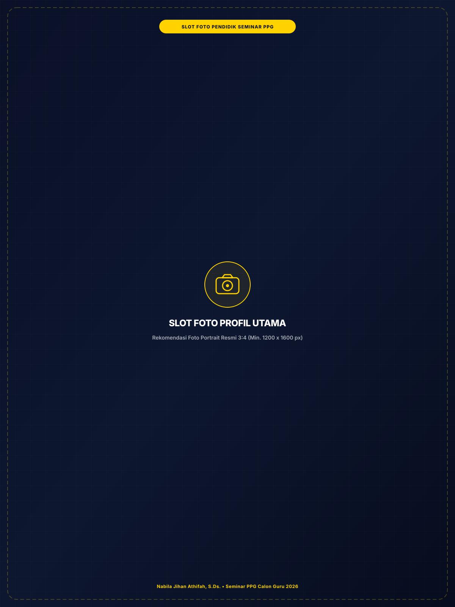
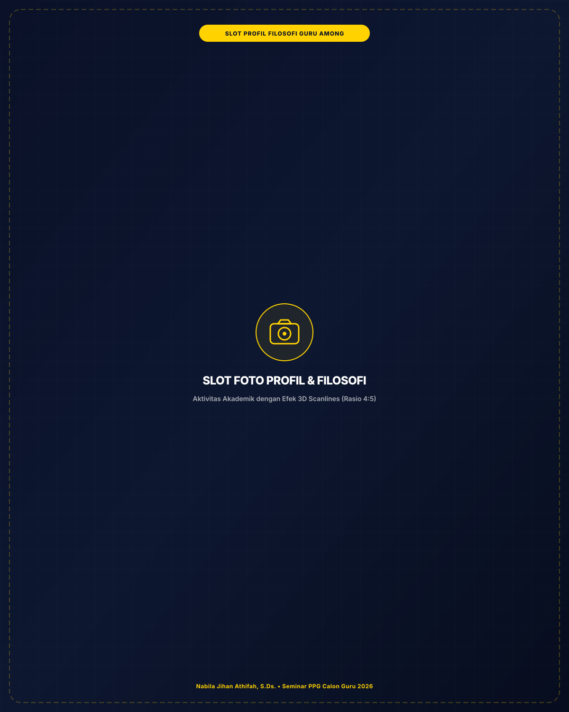
Refleksi awal peneguhan komitmen profesi guru yang berlandaskan filosofi pendidikan Ki Hadjar Dewantara, menempatkan kemerdekaan belajar murid dan pendidikan karakter sebagai fondasi utama pendidikan kejuruan.
Menciptakan pendidikan yang berfokus pada nilai akademik, membentuk karakter, kemandirian, dan keterampilan murid yang berguna bagi kehidupan mereka.
Sebagai guru profesional, saya ingin menjadi pendidik yang tidak hanya menyampaikan materi pelajaran, tetapi juga mampu memahami karakter dan kebutuhan murid. Saya ingin menciptakan suasana belajar yang nyaman, menyenangkan, dan membuat murid merasa dihargai sehingga mereka tidak takut untuk bertanya, mencoba, maupun melakukan kesalahan.
Untuk mencapai visi tersebut, saya akan terus belajar dan mengembangkan kemampuan saya sebagai guru profesional, baik dalam penguasaan materi maupun dalam memilih metode pembelajaran yang sesuai dengan kebutuhan murid. Saya akan berusaha mengenali karakter, minat, dan kemampuan setiap murid agar pembelajaran dapat terasa lebih bermakna bagi mereka.
Di SMK Muhammadiyah 1 Yogyakarta, prinsip ini diwujudkan dengan tidak hanya mengejar kemahiran perangkat lunak desain, tetapi membangun etika kerja studio, kejujuran penggunaan referensi visual, dan daya cipta yang berorientasi pada kebermanfaatan nyata bagi masyarakat.
Sintesis pengalaman belajar mendalam model 4C (Connection, Challenge, Concept, Change) pada 6 mata kuliah Semester I dan 4 mata kuliah Semester II serta verifikasi artefak tugas terbaik.
Materi dalam mata kuliah Filosofi Pendidikan dan Pendidikan Nilai berkaitan erat dengan peran saya sebagai guru profesional karena mengajarkan bahwa tugas guru tidak hanya menyampaikan materi pelajaran, tetapi juga membantu murid mengembangkan karakter luhur dan nilai-nilai positif. Sebagai guru profesional kejuruan DKV, saya ingin menjadi pendidik yang memahami keunikan setiap murid, membuat mereka nyaman dalam belajar, serta memberikan ilmu aplikatif yang bermanfaat.
Selama praktik mengajar awal, saya cenderung lebih berfokus pada penyelesaian target kurikulum, penguasaan perangkat lunak desain grafis, dan ketepatan tugas teknis. Melalui mata kuliah ini, saya menyadari bahwa pembelajaran kejuruan seharusnya tidak hanya berorientasi pada hasil akhir visual, tetapi juga pada proses internal murid dalam menumbuhkan nilai tanggung jawab, kejujuran karya, dan gotong royong.
Konsep penting yang saya pelajari adalah filosofi pendidikan Ki Hadjar Dewantara: sistem among (Ing Ngarsa Sung Tuladha, Ing Madya Mangun Karsa, Tut Wuri Handayani), pendidikan yang menuntun kodrat alam dan zaman, serta pendidikan berlandaskan Profil Pelajar Pancasila. Guru berperan sebagai teladan yang memfasilitasi kemerdekaan berpikir murid dengan tetap menjaga pagar etika berkarya.
Setelah mempelajari mata kuliah ini, saya membiasakan diri untuk lebih memperhatikan proses belajar dan perkembangan karakter murid. Saya memberi ruang luas bagi murid untuk mengemukakan pendapat, belajar menghargai referensi karya orang lain secara jujur (anti-plagiarisme), serta membimbing mereka agar tidak hanya mahir secara teknis, tetapi juga berkepribadian matang.
Lembar Kerja Peserta Didik pengerjaan proyek desain grafis secara berkelompok yang memuat skenario dilema etika (seperti pembagian tugas yang tidak merata, perbedaan pendapat konsep desain, dan kepatuhan hak cipta sumber referensi) untuk merefleksikan nilai-nilai karakter luhur.
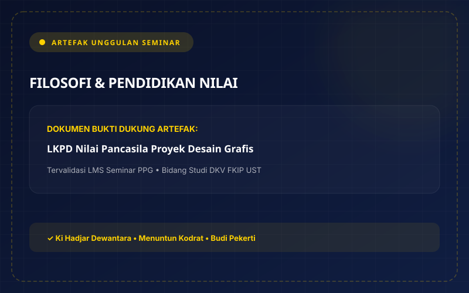
Mata kuliah ini membekali saya kemampuan mendasar untuk memetakan karakteristik, kebutuhan perkembangan kognitif, serta latar belakang sosio-emosional murid kejuruan. Pemahaman ini menjadi kompas penting agar saya dapat merancang pembelajaran yang inklusif, adaptif, dan berkeadilan bagi seluruh peserta didik.
Sebelumnya, saya menganggap pembelajaran di kelas dapat disamaratakan melalui metode ceramah klasikal dan penugasan seragam. Pengalaman di kelas XI DKV 2 menyadarkan saya bahwa setiap murid memiliki kecepatan tangkap, gaya belajar (visual, kinestetik, auditori), dan minat karya yang sangat bervariasi sehingga membutuhkan pendekatan yang terdiferensiasi.
Konsep utama yang saya kuasai meliputi tahapan perkembangan remaja vokasi, teori belajar konstruktivistik, serta sintesis perancangan pembelajaran berdiferensiasi (diferensiasi konten, proses, dan produk). Guru berperan sebagai fasilitator yang menciptakan lingkungan kelas aman dan saling menghargai potensi unik setiap individu.
Saya bertransformasi menjadi guru yang selalu mengawali pembelajaran dengan asesmen diagnostik non-kognitif dan kognitif awal. Saya menyesuaikan skenario instruksi praktikum studio DKV dengan memberikan pilihan tingkat kompleksitas proyek desain agar setiap murid tertantang sesuai zona perkembangan proksimalnya (ZPD).
Dokumen komprehensif pemetaan awal kondisi peserta didik kelas XI DKV 2 SMK Muhammadiyah 1 Yogyakarta, mencakup gaya belajar dominan, tingkat kesiapan awal materi software vektor, dan modul ajar berdiferensiasi proses dan produk.
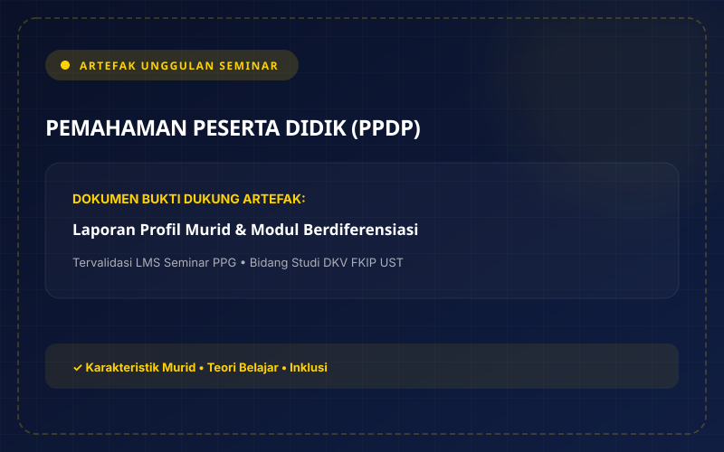
Mata kuliah ini memperkuat kompetensi saya dalam merancang alur KBM yang mendalam (deep learning) serta mengintegrasikan asesmen autentik ke dalam setiap tahapan proses belajar. Hal ini sangat krusial di kejuruan DKV karena kualitas karya desain tidak lepas dari pemahaman konsep brief yang matang.
Tantangan utama yang saya hadapi di kelas XI DKV 2 adalah kebiasaan murid yang ingin langsung membuka komputer dan menggambar tanpa memahami tujuan brief desain klien. Asesmen awal membuktikan bahwa pemahaman konsep komunikasi visual mereka masih dangkal jika tidak didampingi rubrik instruksi yang terstruktur.
Konsep kunci yang saya pelajari meliputi prinsip pembelajaran berkesadaran, bermakna, dan menyenangkan; pemanfaatan Project-Based Learning (PjBL); serta fungsi asesmen sebagai pembelajaran (assessment as learning), untuk pembelajaran (for learning), dan atas pembelajaran (of learning).
Saya mengimplementasikan model PjBL dengan metode roleplay simulasi interaksi desainer-klien. Murid diajak menggali kebutuhan klien melalui wawancara brief sebelum mengeksekusi visual, disertai asesmen formatif berkelanjutan untuk memberikan umpan balik perbaikan karya secara tepat waktu.
Rancangan pembelajaran mendalam berbasis Project Based Learning dan metode roleplay interaktif desainer-klien, melatih murid memahami brief industri, negosiasi kreatif, serta menerjemahkan arahan menjadi karya visual profesional.
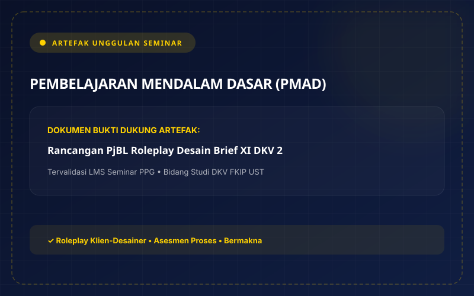
Mata kuliah ini memberikan pondasi psikologis yang transformatif bagi saya sebagai pendidik. Menanamkan pola pikir bertumbuh (Growth Mindset) sangat esensial di bidang desain kreatif di mana revisi karya, kritik visual, dan kegagalan eksplorasi merupakan bagian lumrah dari proses pertumbuhan estetika.
Banyak murid di kelas mudah berkecil hati ketika sketsa desain pertamanya dikritik atau merasa dirinya 'tidak berbakat menggambar'. Tantangan saya adalah mengubah rasa minder dan takut salah tersebut menjadi rasa ingin tahu untuk mencoba kembali dengan strategi teknik yang baru.
Konsep inti yang saya kuasai adalah bahwa kecerdasan dan keterampilan bersifat lentur (neuroplasticity). Melalui konsep 'kekuatan kata BELUM' (the power of YET) dan strategi reframing konstruktif, kesalahan instruksional diposisikan sebagai data informasi belajar, bukan vonis kegagalan.
Saya mengubah cara berkomunikasi di kelas dengan memberikan umpan balik berbasis proses (process praise), mengapresiasi kegigihan murid saat merevisi detail layout, serta menyusun jurnal refleksi pribadi untuk mendokumentasikan pembelajaran dari kendala mengajar sehari-hari.
Catatan reflektif evaluasi berkala guru dalam merekam tantangan, mengurai ketakutan akan kegagalan, dan menerapkan strategi reframing konstruktif agar memandang setiap kendala mengajar sebagai batu loncatan pengembangan profesionalisme pendidik.
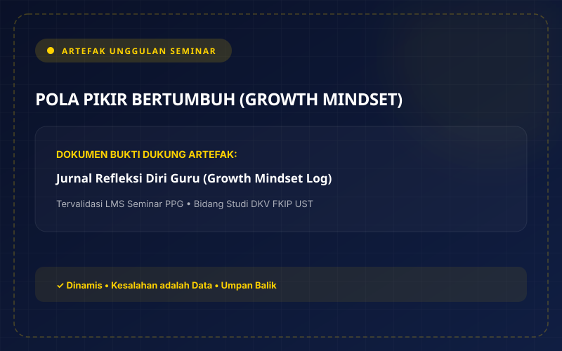
Mata kuliah kekhasan LPTK Universitas Sarjanawiyata Tamansiswa (UST) ini mengakar kuat pada filosofi kebangsaan Ki Hadjar Dewantara. Ajaran Tamansiswa sangat selaras dengan budaya studio desain modern yang menuntut kemerdekaan daya cipta dalam koridor tanggung jawab sosial dan budi pekerti.
Tantangan praktiknya adalah bagaimana memberikan kebebasan merancang kepada murid tanpa kehilangan ketertiban dan ketepatan tenggat waktu industri. Menemukan titik temu antara pamomong (mengasuh dengan kelembutan) dan ketegasan standar mutu merupakan seni mendidik yang harus dilatih.
Konsep utama yang saya serap adalah Sistem Among (Ing Ngarsa Sung Tuladha, Ing Madya Mangun Karsa, Tut Wuri Handayani), konsep Tri-Kon (Kontinuitas, Konvergensitas, Konsentrisitas), serta integrasi Tri-Nga (Ngerti, Ngrasa, Nglakoni) dalam penciptaan karya desain.
Saya memposisikan diri sebagai pamong belajar yang mendampingi di samping (Ing Madya), membangkitkan inisiatif murid saat mengalami kebuntuan ide visual, serta memberikan kepercayaan penuh kepada murid untuk mempresentasikan karyanya di hadapan rekan sejawat.
Modul ajar pemahaman desain brief terintegrasi filosofi Sistem Among dan konsep Tri-Nga (Ngerti: memahami brief, Ngrasa: mengolah empati audiens, Nglakoni: mengeksekusi visual), menempatkan kebebasan berkarya murid dalam bingkai ketertiban etika.
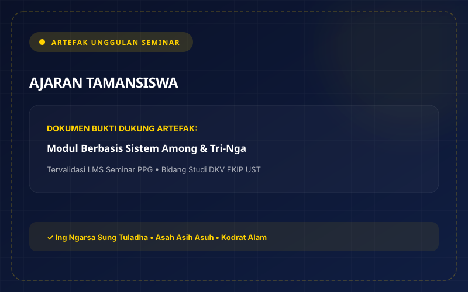
PPL Terbimbing di SMK Muhammadiyah 1 Yogyakarta menjadi kawah candradimuka di mana teori pedagogi dan didaktik kejuruan yang saya pelajari di kampus diuji secara nyata di hadapan 36 murid kelas XI DKV 2 dengan bimbingan intensif Guru Pamong dan DPL.
Tantangan terberat adalah pengkondisian suasana kelas studio praktikum. Murid sangat mudah terdistraksi gawai, asyik bermain game di komputer, atau mengobrol sendiri saat materi software desain dijelaskan secara monoton di depan layar proyektor.
Konsep yang saya terapkan adalah siklus Plan-Do-See-Reflect (Lesson Study). Melalui supervisi klinis berkala dari Guru Pamong, saya belajar teknik ice breaking edukatif, pengelolaan durasi instruksi ringkas (maksimal 15 menit), serta strategi pendampingan tutor sebaya.
Saya melakukan penyempurnaan drastis antarsiklus KBM: membagi kelas menjadi kelompok kerja studio kecil, menyiapkan modul lembar kerja langkah-demi-langkah bergambar, serta memperbanyak demonstrasi langsung di komputer murid yang mengalami kesulitan teknis.
Dokumen evaluasi berkala proses KBM bersama Guru Pamong di SMK Muhammadiyah 1 Yogyakarta, menganalisis efektivitas metode mengajar, pengelolaan dinamika kelas, serta adaptasi strategi perbaikan antarsiklus.
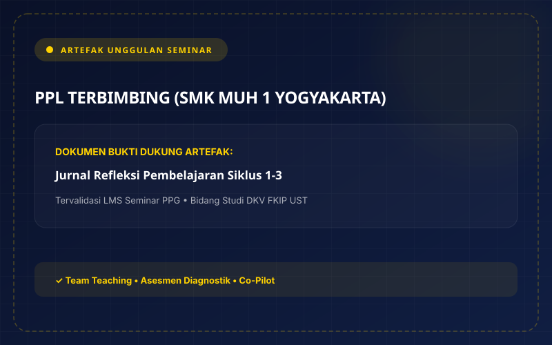
Mata kuliah ini menyadarkan saya bahwa pembelajaran kognitif dan keterampilan teknis tidak akan optimal jika kondisi emosional murid berada dalam kondisi tertekan, cemas, atau lelah. Kesiapan sosial-emosional adalah pintu gerbang menuju konsentrasi dan kreativitas tinggi.
Dalam praktikum studio DKV dengan tenggat waktu render yang ketat, murid kerap memperlihatkan gejala frustrasi, mudah tersinggung ketika komputernya error, atau putus asa saat software crash. Guru dituntut memiliki regulasi emosi prima agar tidak ikut terpancing amarah.
Konsep yang saya dalami mencakup kerangka kerja UNESCO-MGIEP EMC2 (Empathy, Mindfulness, Compassion, Critical Inquiry), 5 kompetensi sosial emosional CASEL (Self-Awareness, Self-Management, Social Awareness, Relationship Skills, Responsible Decision-Making), dan teknik kesadaran penuh STOP.
Saya mengintegrasikan teknik STOP (Stop, Take a breath, Observe, Proceed) secara rutin di awal KBM dan saat pergantian jam praktikum. Saya juga menyediakan sudut check-in emosi (mood meter) di papan studio agar murid merasa didengar dan divalidasi perasaannya.
Panduan instruksional integrasi pembelajaran sosial emosional (EMC2 dan CASEL) melalui panduan teknik STOP (Stop, Take a breath, Observe, Proceed) untuk menstabilkan fokus dan regulasi emosi murid saat transisi jam pelajaran praktikum studio.
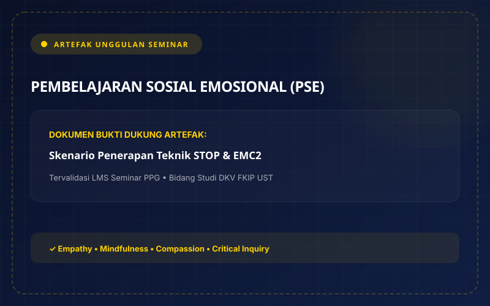
Mata kuliah Semester II ini mempertajam keahlian saya dalam merancang sistem penilaian kejuruan yang komprehensif, valid, dan reliabel. Asesmen di SMK seni rupa dan DKV sering terjebak dalam persepsi 'selera subjektif guru', sehingga dibutuhkan instrumen yang terukur dan transparan.
Tantangannya adalah merumuskan indikator penilaian yang adil antara aspek teknis (kerapian path, proporsi layout, color harmony) dengan aspek non-teknis (kreativitas konsep, kedisiplinan file management, orisinalitas ide). Murid membutuhkan kejelasan kriteria sebelum mulai berkarya.
Konsep yang saya kuasai meliputi perancangan rubrik analitik dan holistik bergradasi skor jelas, teknik triangulasi bukti belajar, instrumen penilaian antarteman (peer assessment), serta pemberian descriptive feedback yang memacu refleksi diri (feed-forward).
Saya menyusun instrumen rubrik penilaian terpadu yang dibagikan dan dibahas bersama murid sebelum proyek dimulai. Saya juga menerapkan sesi critique session mini di mana murid saling memberikan masukan membangun menggunakan lembar peer assessment terstandar.
Rubrik penilaian komprehensif yang mengombinasikan asesmen diagnostik, formatif berkala, lembar peer-assessment kerja tim, dan rubrik holistik produk karya visual yang menyatukan standar hard skills serta soft skills kejuruan.
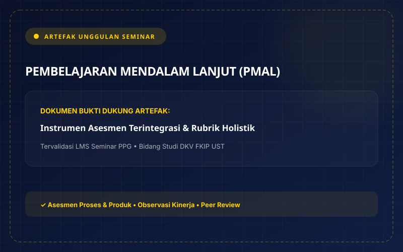
Mata kuliah ini menjadi wahana inkubasi utama terciptanya karya inovasi unggulan LK 4 saya. Di sinilah kemampuan saya sebagai sarjana desain komunikasi visual dipadukan dengan kepekaan pedagogis guru untuk menciptakan solusi media ajar yang berdampak nyata.
Observasi kelas XI DKV 2 SMK Muhammadiyah 1 Yogyakarta menunjukkan bahwa ketika materi teori dasar desain grafis (nirmana, tipografi, warna) diajarkan dengan presentasi slide konvensional, murid mudah mengantuk dan pasif. Karakteristik murid vokasi yang kinestetik menuntut media pembelajaran fisik yang interaktif.
Konsep inovasi yang saya kembangkan adalah Game-Based Learning (GBL) terpadu Roleplay Agensi Kreatif bertajuk 'DKV Quest Deck', mengintegrasikan kartu kuis tebak desain untuk menggantikan ceramah, kartu peran resmi agensi untuk menyalurkan energi aktif murid, serta kartu scaffolding mandiri untuk mengatasi hambatan bimbingan teknis proyek.
Hasilnya sangat memukau: implementasi 'DKV Quest Deck' berhasil meningkatkan partisipasi aktif kelas hingga 100%, mereduksi antrean bimbingan teknis guru lebih dari 60%, serta meningkatkan ketuntasan hasil karya desain murid kelas XI DKV 2 SMK Muhammadiyah 1 Yogyakarta menjadi 91%.
Set media fisik kartu taktil (Art Carton 260 gsm laminasi doff) yang terdiri dari Kartu Tebak Desain (Kuning), Kartu Peran Agensi (Biru), Kartu Scaffold & Cheat-Sheet (Putih), serta Kartu Misi Proyek Bertingkat Tiers 1–3 (Emas) untuk kelas XI DKV 2 SMK Muhammadiyah 1 Yogyakarta.
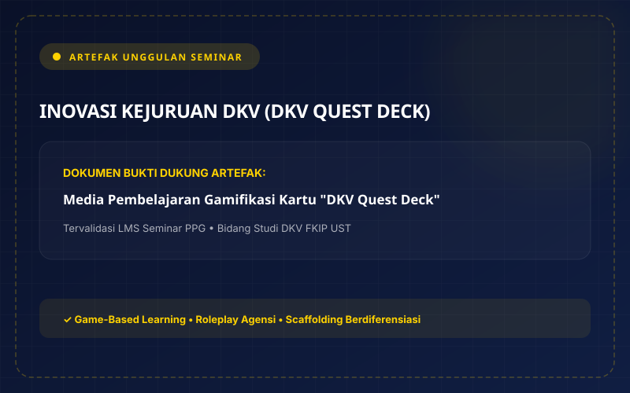
PPL Mandiri merupakan fase kulminasi perkuliahan PPG di mana saya mengambil alih tanggung jawab pembelajaran secara mandiri penuh di kelas XI DKV 2 SMK Muhammadiyah 1 Yogyakarta, mulai dari perencanaan, pelaksanaan KBM, asesmen autentik, hingga pelaporan evaluasi program sekolah.
Tantangan fase mandiri adalah mengelola ekspektasi kurikulum kejuruan yang padat sembari tetap mempertahankan iklim belajar yang humanis dan menyenangkan bagi murid yang memiliki rentang perhatian pendek dan kecenderungan mudah jenuh.
Konsep yang saya matangkan adalah penerapan pembelajaran berbasis proyek mandiri dengan integrasi simulasi agensi desain kreatif, di mana murid belajar bertanggung jawab memegang peran desainer profesional yang melayani kebutuhan brief klien nyata.
Saya bertransformasi menjadi guru yang mandiri, adaptif, dan percaya diri. Saya tidak lagi kaku terpaku pada rencana tertulis, melainkan lincah melakukan penyesuaian instruksi saat murid membutuhkan pendampingan khusus, serta rutin merefleksikan setiap sesi KBM untuk perbaikan berkelanjutan.
Perangkat KBM komprehensif praktik mandiri penuh, meliputi modul ajar terverifikasi, lembar kerja murid, instrumen asesmen autentik, dan video dokumentasi KBM berbasis simulasi industri kreatif di SMK Muhammadiyah 1 Yogyakarta.
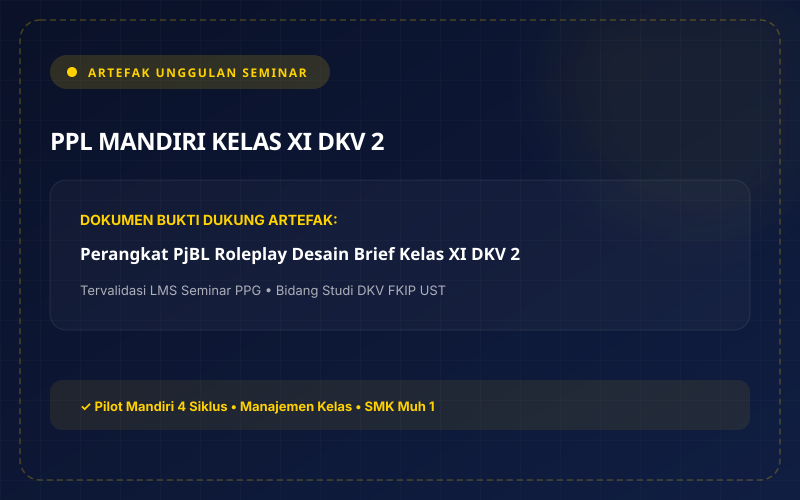
Berdasarkan observasi KBM kelas XI DKV 2, murid memiliki energi kinestetik tinggi, suka berkeliling, mengobrol, alergi terhadap ceramah materi statis, kemampuan desain beragam (heterogen), dan sangat bergantung pada bimbingan guru saat mengerjakan tugas proyek.
Murid kejuruan DKV memiliki naluri sosial dan visual yang kuat. Dibutuhkan sebuah media yang mampu mengalihkan energi gerak menjadi kolaborasi kerja terstruktur, mengganti ceramah dengan tebak-tebakan konsep, serta menyediakan bimbingan scaffolding mandiri di meja kerja murid.
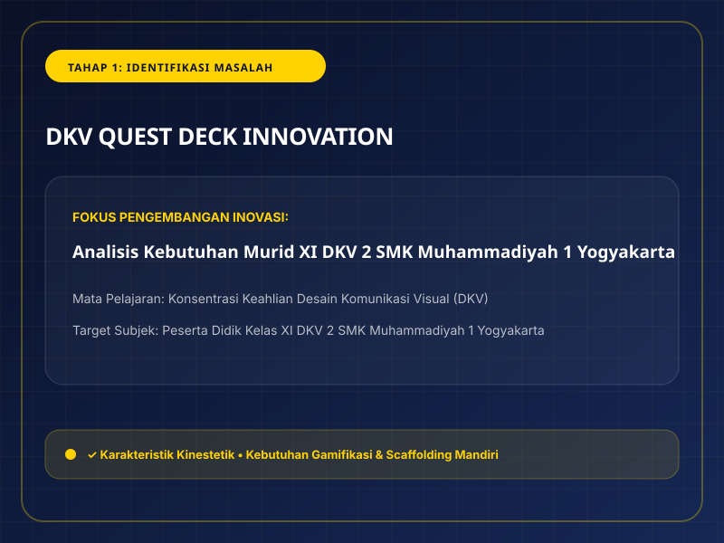
Mengubah kelompok belajar menjadi 'Mini Studio Agensi Kreatif' dengan pembagian 4 peran resmi: Creative Director, Client Liaison (diberi izin resmi berkeliling kelas untuk riset/feedback), Visual Designer, dan Quality Controller.
Sesuai ajaran Ki Hadjar Dewantara bahwa *kodrat anak adalah bermain*, naluri aktif murid dituntun (*Sistem Among: Asah, Asih, Asuh*) melalui alur *Ngerti* (tebak konsep), *Ngrasa* (tanggung jawab peran), dan *Nglakoni* (eksekusi proyek bertingkat Tier 1, 2, dan 3).
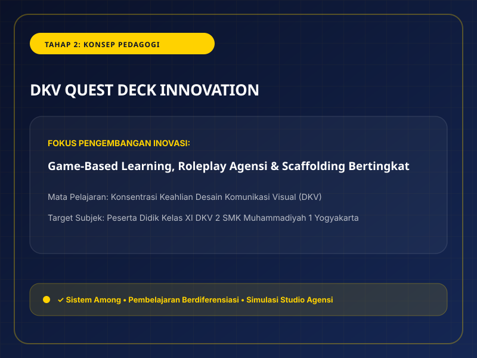
15 Kartu Tebak Desain (Kuning), 4 Kartu Peran Agensi (Biru), 12 Kartu Scaffold & Cheat-Sheet (Putih), 9 Kartu Misi Proyek Bertingkat Tiers 1–3 (Emas), wooden card stand meja, dan tuck box kemasan saku eksklusif.
Diproduksi dengan standar grafis profesional tahan air. Kartu cheat-sheet didisplay di samping monitor komputer studio sehingga murid dapat memecahkan kendala teknis (shortcut, formula grid, kontras warna) secara mandiri tanpa harus antre memanggil guru.
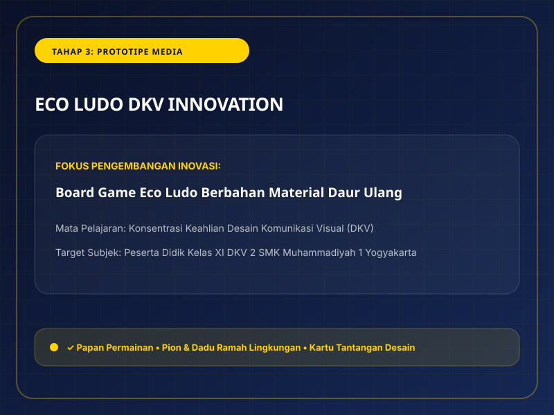
Perilaku mengganggu di kelas berkurang hingga 85%, keterlibatan aktif mencapai 100%, ketuntasan hasil karya desain meningkat dari 62% menjadi 91%, dan beban antrean bimbingan teknis guru berkurang lebih dari 60%.
Triangulasi evaluasi melalui lembar observasi aktivitas murid, rubrik asesmen portofolio desain autentik, dan angket respon siswa membuktikan bahwa pembelajaran proyek berlangsung sangat kondusif, menyenangkan, dan efektif menumbuhkan Profil Pelajar Pancasila.
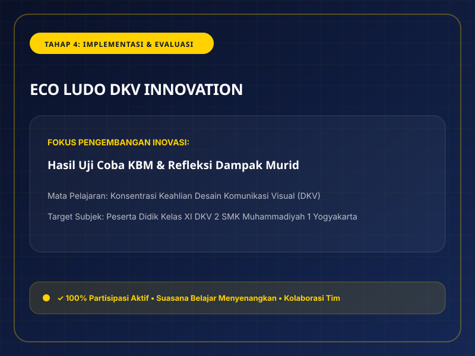
Sintesis pemikiran komprehensif setelah menempuh perkuliahan PPG Semester 1 dan 2 serta peneguhan 3 resolusi strategis saat memulai karir pendidik profesional.
"Setelah mengikuti rangkaian perkuliahan PPG selama semester 1 dan 2, saya menyadari bahwa pendidikan di Indonesia seharusnya tidak hanya berfokus pada nilai akademik, tetapi juga pada pengembangan karakter, potensi, dan keterampilan murid. Setiap murid memiliki kemampuan, kebutuhan, dan cara belajar yang berbeda, sehingga guru perlu memahami perbedaan tersebut dalam merancang pembelajaran. Saya juga merasa bahwa pembelajaran seharusnya tidak hanya berisi penjelasan materi, tetapi memberikan kesempatan kepada murid untuk aktif, berkreasi, dan menerapkan apa yang mereka pelajari dalam kehidupan nyata. Hal ini sejalan dengan pemikiran Ki Hadjar Dewantara bahwa pendidikan merupakan proses menuntun murid agar dapat mengembangkan potensinya. Oleh karena itu, saya berharap pendidikan di Indonesia dapat menjadi ruang yang nyaman bagi murid untuk belajar, berkembang, dan mengenali kemampuan dirinya tanpa merasa takut melakukan kesalahan."
"Untuk menjadi guru profesional, saya perlu terus belajar dan mengembangkan kemampuan diri, baik dalam penguasaan materi maupun dalam merancang dan melaksanakan pembelajaran. Selama mengikuti PPG, saya belajar pentingnya memahami karakteristik murid, menyusun perangkat pembelajaran, melakukan asesmen, serta memilih metode yang sesuai dengan kebutuhan murid. Pengalaman PPL juga mengajarkan saya bahwa kondisi di kelas tidak selalu sesuai dengan yang direncanakan, sehingga saya perlu lebih fleksibel dan mampu menyesuaikan pembelajaran dengan situasi yang ada. Selain itu, saya ingin menjadi guru yang terbuka terhadap kritik dan saran, mau mengevaluasi diri, serta dapat bekerja sama dengan rekan guru. Bagi saya, guru profesional bukan hanya guru yang mampu mengajar dengan baik, tetapi juga guru yang mau terus belajar, bertanggung jawab, dan berusaha memahami muridnya."
| No | Pilar Resolusi Karir | Uraian Aksi Nyata Guru Profesional (Nabila Jihan Athifah, S.Ds.) | Target Waktu |
|---|---|---|---|
| 01 | Mengenal & Memahami Karakteristik Murid | Mengenal murid dengan lebih baik, mulai dari kemampuan awal, minat, hingga kesulitan yang mereka hadapi, agar saya dapat memberikan pendampingan yang sesuai serta merancang pembelajaran berdiferensiasi yang inklusif bagi seluruh peserta didik. | Awal Semester |
| 02 | Merancang Pembelajaran Menarik & Bermakna | Merancang pembelajaran yang tidak hanya berfokus pada penyampaian materi, tetapi juga melibatkan praktik, proyek nyata (Project Based Learning), simulasi roleplay desainer-klien, gamifikasi kartu misi (*DKV Quest Deck*), dan kegiatan lain yang membuat murid lebih aktif dan tertarik untuk belajar. | Berkelanjutan |
| 03 | Membiasakan Refleksi & Evaluasi Diri Berkala | Membiasakan diri untuk melakukan refleksi setelah mengajar agar dapat mengetahui bagian yang sudah berjalan baik dan bagian yang masih perlu diperbaiki. Saya menyadari bahwa menjadi guru yang baik membutuhkan proses, sehingga saya ingin terus belajar dari pengalaman dan tidak berhenti memperbaiki diri demi memberikan pembelajaran yang lebih baik bagi murid. | Setiap Sesi KBM |
Seluruh berkas dokumen Lembar Kerja 1 s.d. 4, naskah inovasi, instrumen evaluasi, dan panduan ujian lisan yang telah terverifikasi resmi oleh Dosen Pembimbing Seminar dan Guru Pamong Penguji.
Visi pribadi untuk pendidikan di Indonesia, visi guru profesional, serta rencana aksi pengembangan diri guru kejuruan DKV.
Refleksi 6 mata kuliah Semester I alur 4C (Filosofi, PPDP, PMAD, Growth Mindset, Ajaran Tamansiswa, PPL Terbimbing).
Refleksi 4 mata kuliah Semester II alur 4C (PSE, PMAL, Inovasi Kejuruan DKV Quest Deck, PPL Mandiri Kelas XI DKV 2).
Refleksi paradigma baru pendidikan Indonesia, profil guru profesional, dan 3 pilar rencana tindak lanjut karir.
Desain karya inovatif media gamifikasi kartu misi, roleplay agensi kreatif, dan scaffolding bertingkat 'DKV Quest Deck' untuk kelas XI DKV 2 SMK Muhammadiyah 1 Yogyakarta.
Naskah akademik desain pembelajaran inovatif, rubrik evaluasi, serta instrumen penilaian ujian lisan Seminar PPG FKIP UST.